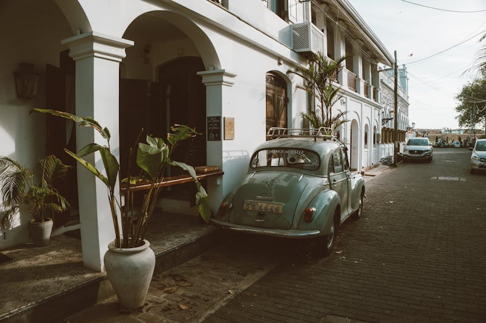

Francis Goa

Even though Goa is the smallest state on the Western coast of India, it is one of the most popular due to its rich heritage, warm and friendly people, tropical climate, scenic beaches and exotic handicraft.
Back in the 60’s & 70’s, the North of the island became a hippy-haven, a place to escape everyday life and quickly became somewhere for backpackers to hang out and party.
For people travelling India alone, it was the perfect introduction. Naturally, the more popular a place becomes, the more it changes and over time.
The North now seems to be associated with high-rise hotels, watersports, street markets and cultural buildings but it also still retains its party-vibe.
Goa was recommended to us by someone when we were holidaying in Morocco, so we carried out some research on which was the best resort to stay – North or South?
Boat Beginner's Guide to Goa Blog
Table of Contents
Quiet Cavelossim
Dudhsager Falls & Spice Plantation
Peaceful Palolem
Our Final Evening In Goa
Travel Facts for Goa, India
Other Things to Do in Goa
Other Attractions
Markets In Goa
A small selection of the best beaches:
Pin It For Later
Quiet Cavelossim
We tapped Goa onto the end of a week touring the Golden Triangle and were looking for something quieter, relaxing and less developed – with all this in mind, we were advised to head South and chose Cavelossim Beach at the Dona Sylvia Beach Resort.

To ensure the area doesn’t become monopolised with high-rise hotels in the North, the resorts around Cavelossim are not allowed to be more than two storeys high.
Resort Beginner's Guide to Goa The grounds are in a beautifully tranquil setting, filled with trees and pretty flowers, including my favourite – frangipani! Frangipani Beginner's Guide to Goa The sand at Cavelossim beach was white, soft and crunchy – it felt a little like snow underfoot (only warmer!). On our first day we relished in feeling the warm refreshing Arabian sea lap against our toes. We watched crabs dart across the beach and watched locals trying to sell their wares. They attempted to coax us into their beach shacks but after all the haggling in Rajasthan we simply wanted to relax and walk – shopping would come later. Whilst we were in Goa, we celebrated our 2nd wedding anniversary so we headed to the beach for sunset with a bottle of champagne. The sky turned from pastel peach to oranges then pink – it was the perfect end to our special day.
Angie Sy Beginner's Guide to Goa The Goan’s are renowned for their fine multi-cultural cuisine and we both absolutely loved the culinary masterpieces served up at the resort every single time we dined. They whip up everything possible with various types of veg and we piled this high onto our plates – this is unusual for us, we love our meat!! Outside the resort was a small road with shops and a few bars. We always had fun talking and joking with the locals, they really made us feel part of the community and quickly recognised our faces. One night we stopped for a beer and cocktail at the Jazz Inn which, bizarrely, had a big frangipani tree growing through the middle of it! We grooved to the cool tunes played by the DJ who was also a Bob Marley impersonator from Birmingham, England. We had a great chat with him and discovered he spends 6 months a year in Goa. On one occasion we caught an auto-rickshaw as a taster of true India, it was hilarious! We laughed the entire journey! The night sky was pitch black and our vehicle barely lit the way with its tiny headlamps – goodness knows how he could see! It was loud, crazy and filthy dirty, my hair looked like a scarecrow when we finished! The driver was so proud at how quickly we had reached our destination! We had to shower when we were back to our hotel as we felt so disgusting – but the journey was well worth it!

Dudhsager Falls & Spice Plantation Dudhsager Falls (pronounced dud-sager) means “sea of milk” and is located in Colem, two bumpy hours on a coach from where we were staying. To reach the falls, we were transferred into an overland jeep for the final 45 minutes of the journey and we drove through 3 lakes (very cool!) followed by a 10 minute walk over stones and boulders. We stripped off to our bathers and gingerly inched our bodies into the freezing cold fresh water – obviously after a few minutes of swimming and we were acclimatised, it was OK but it was rather crisp for those first initial moments! Big fish swam alongside us and people threw pieces of banana for them to eat – oh yes – fish …eating bananas! We swam over to the cascading falls and felt its power as the spray hit our face, it was beautiful. We had some free time here, so we chilled on a rock listening to the roar of the tumbling water – music to our ears!
Peaceful Palolem Considered to be one of the best beaches in Goa, Palolem was an hour’s taxi drive from our resort. It is an idyllic white crescent beach naturally blessed with palm trees lining the shore, calm turquoise sea and colourful beach huts. It definitely had a laid back vibe and we watched as fishermen gathered their nets on the beach – all very picture-postcard. We had travelled here to enjoy the beach, and whilst sitting down for an hour, a few sellers asked if we wanted to buy anything, and when we declined they left us alone.
This made it such a pleasure to relax and we understood the lure of why a backpacker would spend weeks here – purely to enjoy the simple, chilled life! After taking a peaceful stroll along the shore, we sat in a beach bar sipping a cold drink and just looking at the view, we wanted take time to soak up the ambience and really “feel” what this place was all about. So to sum up Palolem – it really is a tranquil slice of paradise! Our Final Evening In Goa As the sun set on our last evening, we sat on the beach and reminisced at how magical our time had been.
Even though the sun had disappeared, there was such a nice atmosphere we chose to stay a few hours. We listened to the music playing, danced on the sand and watched the high tide lap against the beach tables. Sunset Beginner's Guide to Goa People lit paper lanterns and set them adrift into the sky. We watched as they faded into the distance forming an orange dot on the skyline, noticeably different to the gleaming white of the stars. It was the best way to end our magical trip.

Other Things to Do in Goa We were attracted to Goa purely because someone recommended it! We had already looked at the Golden Circle tour with tiger safari, so Goa was the natural place to add-on. Incidentally, whilst staying here, tour operators do give the option for overnights trips to visit the Taj Mahal and for tiger safaris. You can book transport to come to and from Goa ahead of time by using the popular website, Bookaway.
Other Attractions Panaji/Panjim – The capital full of historical Latin & Portuguese culture Bom Jesus Basilica –(for St. Francis Xavier tomb) Old Goa Wildlife Sanctuaries – Bhagwan Mahvir (of which Mollem National Park is a part) or Cotigao Lamgau Caves Spice plantation visit (there are many all over) Casino cruise If you’re hanging out in Goa, head further south and check out the cool state of Kerala. Backwaters, surf and tonnes of cool things to do!